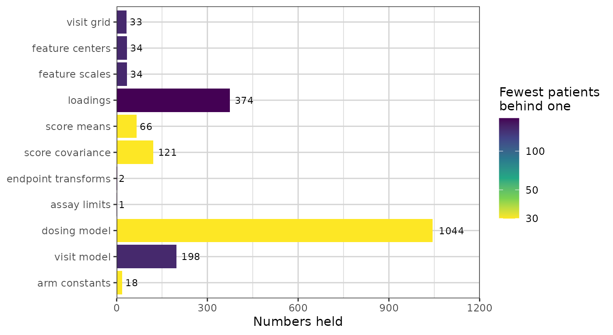
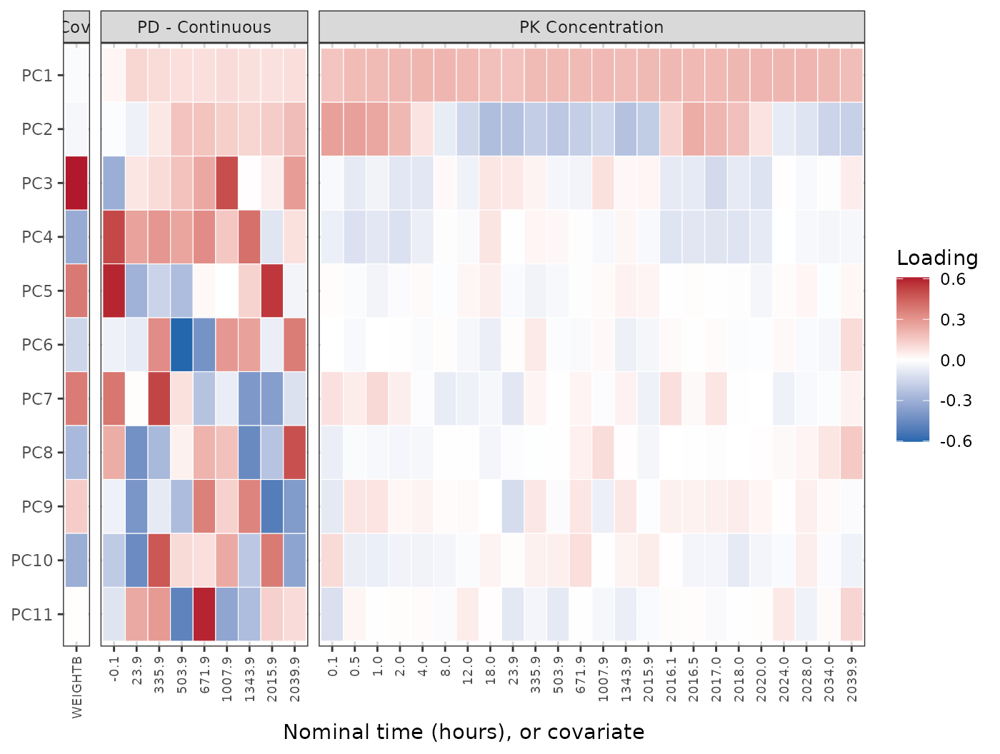
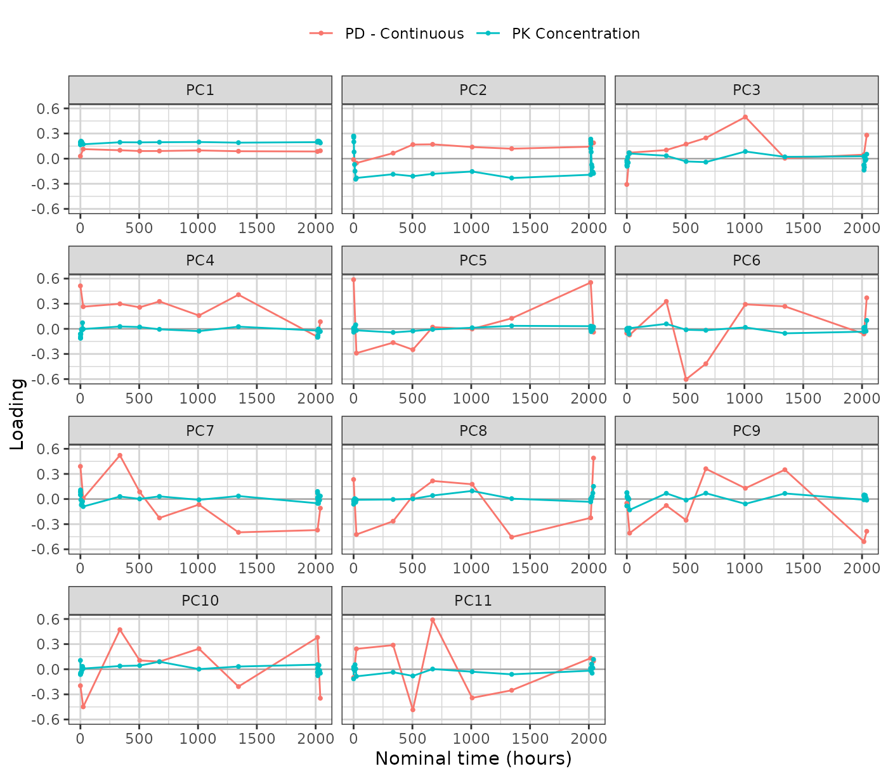
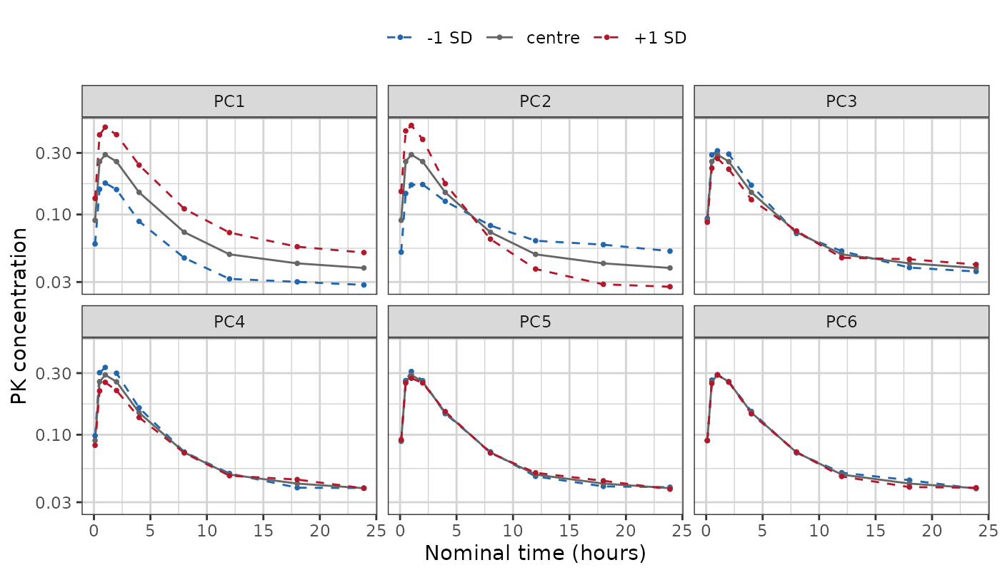
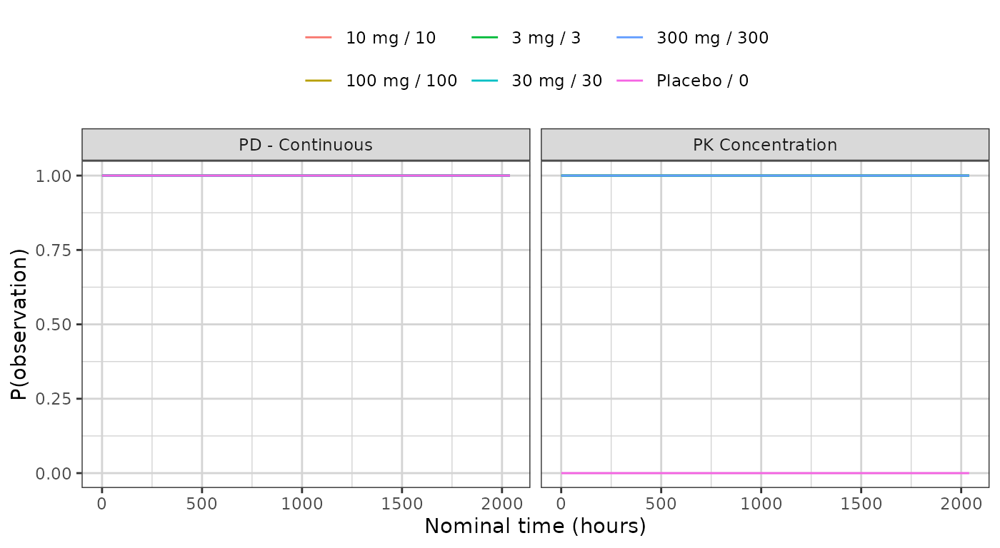

Every generator in this package reduces a study to a fingerprint — a set of summaries small enough to carry out of the environment that holds the real data, and complete enough to build a synthetic study from. The fingerprint is the whole of what a synthetic dataset descends from. Nothing else about the source reaches it, which is why looking at the fingerprint is how you decide whether the output can be trusted, and how you satisfy yourself that no patient left the room.
synpmx_pca_summarize() returns this generator’s
fingerprint, as a pmx_trial_summary.
synpmx_pca_generate() reads that object and no patient
row.
This vignette walks through it group by group. It is a reference:
read vignette("pca-demo") first for a run end to end, and
vignette("pca-algorithm") for how each quantity is
estimated and why. vignette("pmxmodel-fingerprint") is the
same walk through the PMX model generator’s fingerprint, and the two are
worth reading side by side — they carry the same apparatus and a
completely different description of the profiles.
The object is a plain list, and the names used below are its own, so a quantity can be reached directly when no accessor covers it.
The study
library(dplyr)
raw <- as.data.frame(get(utils::data(list = "case1_pkpd", package = "xgxr"))) |>
mutate(CENS = ifelse(NAME == "PD - Continuous", 0, CENS))
roles <- pmx_roles(
id = "ID",
time = "TIME",
dv = "LIDV",
cens = "CENS",
amt = "AMT",
evid = "EVID",
cmt = "CMT",
dvid = "NAME",
nominal_time = "NOMTIME",
strata = c("TRTACT", "DOSE"),
covariates = "WEIGHTB",
keep = "STUDY"
)
trial_summary <- synpmx_pca_summarize(raw, roles, seed = 808)
trial_summary
#> A trial summary, from synpmx_pca_summarize()
#>
#> fitted on 180 patients, 6 arm(s): Placebo / 0 (30), 3 mg / 3 (30), 10 mg / 10 (30), 30 mg / 30 (30), 100 mg / 100 (30), 300 mg / 300 (30)
#> endpoints PD - Continuous (9 visits modelled), PK Concentration (24 visits modelled)
#> covariates WEIGHTB
#> components 11 (90% of variance)
#> dose term factor
#> dosing 85 planned cycle(s) per arm | no reductions, interruptions or early stops
#>
#> synpmx_pca_generate() reads this object and nothing else. To look inside it:
#> pca_report() what it read out of the source data
#> pca_dosing() the planned dose schedule, per arm
#> pca_dose_rates() reduction, interruption and discontinuation
#> pca_visits() the probability of a visit, per arm
#> pca_components() the loadings, over timeThe inventory
pca_report() is the top-level account: one row per
released quantity, how many numbers it holds, and the smallest number of
patients standing behind any one of them.
show(as.data.frame(pca_report(trial_summary)),
"Every quantity read out of the source data")
pca_report(trial_summary)It is a lot of numbers, and how they are distributed is the part worth seeing before any of them. The same table drawn:
library(ggplot2)
library(xgxr)
xgx_theme_set()
inventory <- as.data.frame(pca_report(trial_summary))
inventory$quantity <- factor(inventory$quantity,
levels = rev(inventory$quantity))
ggplot(inventory, aes(quantity, numbers, fill = min_patients)) +
geom_col() +
geom_text(aes(label = numbers), hjust = -0.25, size = 3) +
coord_flip() +
scale_y_continuous(expand = expansion(mult = c(0, 0.15))) +
scale_fill_viridis_c(trans = "log10", direction = -1) +
labs(x = NULL, y = "Numbers held",
fill = "Fewest patients\nbehind one")
The dosing model is the largest group, and that is a fact
about this study rather than about the method. It holds a time
and an amount per planned cycle per arm, and case1_pkpd
doses daily for twelve weeks across six arms, so roughly 85 cycles each.
A single-dose study’s row would be six numbers long. The loadings are
the next largest and are the group that does grow with the method: one
number per component per feature, so they scale as the basis widens.
Size and exposure are independent, and the figure is here to show that they are. The loadings are the whole cohort’s — every subject contributes to every one, so all 180 patients stand behind each — while the planned dose schedules beside them are read per arm, so 30 do. The longest bar in the figure is therefore one of the most exposed quantities rather than one of the least. Length and fill say different things and have to be read separately: the combination to look for is a long bar whose fill sits at the bottom of the scale, which is many numbers each backed by few people. Here the dosing model is exactly that.
The column is for judging where inside this object the risk is
concentrated. It is not a release decision: synpmx_pca()
makes no formal privacy claim, and pca_features() and
pca_scores() return their tables marked
"restricted_not_releasable" whatever this figure shows.
Every section below expands one of those rows.
The arms
Sizes are what the generated cohort is split by, in the same proportions.
data.frame(
arm = trial_summary$arms$arms,
patients = as.integer(trial_summary$arms$sizes[trial_summary$arms$arms])
)
#> arm patients
#> 1 Placebo\r0 30
#> 2 3 mg\r3 30
#> 3 10 mg\r10 30
#> 4 30 mg\r30 30
#> 5 100 mg\r100 30
#> 6 300 mg\r300 30The feature grid
Every column of the matrix the components are built on: one per
baseline covariate, and one per endpoint per retained nominal time.
patients is how many subjects hold an observation in that
cell, and cells held by fewer than min_column_patients were
dropped rather than modelled.
show(as.data.frame(pca_features(trial_summary)),
"Every feature, with its mean and standard deviation", paged = TRUE)center and scale are on the modelling
scale, which the transform column names: the log scale for
a positive endpoint, the original scale otherwise.
The endpoint transforms and assay limits
basis <- trial_summary$basis
digits3(data.frame(
endpoint = names(basis$transforms),
transform = vapply(basis$transforms, function(t) t$method, character(1)),
offset = signif(vapply(basis$transforms, function(t) t$offset, numeric(1)), 3),
lloq = vapply(trial_summary$schema$censoring, function(c) {
if (is.null(c$left)) NA_real_ else c$left
}, numeric(1)),
row.names = NULL
))
#> endpoint transform offset lloq
#> 1 PD - Continuous identity 0.00 NA
#> 2 PK Concentration log_offset 0.02 0.05The offset keeps log() finite near zero. The lower limit
of quantification is what a generated value below it is reported at,
with CENS set.
The components
pca_components() gives one loading per component and
retained feature, and the loadings are the largest thing in the object.
This section shows all of them, three ways: the whole matrix at once,
then every component as a curve, then what each one does to a profile in
the units the study measured.
show(attr(pca_components(trial_summary), "variance_explained"),
"Variance explained, per component")
components <- pca_components(trial_summary)
c(components = trial_summary$basis$k,
features = length(trial_summary$basis$columns),
loadings = nrow(components))
#> components features loadings
#> 11 34 374All of them at once
Every loading in the object, as one tile each: components down the side, features across, and the features grouped by what they belong to. This is the complete basis — nothing below adds a number this figure does not already carry.
# One panel per endpoint plus one for the covariates, with the cells of each
# endpoint in time order. `feature` is the object's own name for a cell and is
# unique, which is what makes it a safe axis; the label under it is the reading.
grid <- unique(components[, c("feature", "endpoint", "time")])
# `space = "free_x"` sizes each panel by its column count, so the covariate
# panel is one column wide and its strip has room for a short word only.
grid$group <- ifelse(is.na(grid$endpoint), "Cov.", grid$endpoint)
grid <- grid[order(grid$group, grid$time, grid$feature), ]
grid$label <- ifelse(is.na(grid$time), sub("^cov_", "", grid$feature),
format(grid$time, trim = TRUE))
heatmap_data <- merge(components, grid[, c("feature", "group", "label")],
by = "feature")
heatmap_data$feature <- factor(heatmap_data$feature, levels = grid$feature)
heatmap_data$component <- factor(
heatmap_data$component,
levels = rev(paste0("PC", seq_len(trial_summary$basis$k)))
)
ggplot(heatmap_data, aes(feature, component, fill = loading)) +
geom_tile(colour = "white", linewidth = 0.2) +
facet_grid(~group, scales = "free_x", space = "free_x") +
scale_x_discrete(labels = stats::setNames(grid$label, grid$feature)) +
scale_fill_gradient2(low = "#2166AC", mid = "white", high = "#B2182B",
midpoint = 0) +
labs(x = "Nominal time (hours), or covariate", y = NULL, fill = "Loading") +
theme(axis.text.x = element_text(angle = 90, hjust = 1, vjust = 0.5,
size = 7),
panel.grid = element_blank())
Read it row by row. A row of one colour is overall magnitude: the component moves every visit the same way, which is what PC1 does across the PK panel. A row that changes colour along a panel separates early visits from late, which is PC2. A row with colour in one panel and none in another is specific to that endpoint — PC3 is almost entirely the weight covariate, and PC4 downwards are almost entirely the PD endpoint.
What the figure does not show is the loadings shrinking as the components go down. Each component’s loadings have the same total mass, because the decomposition returns them at unit length, so a later component is not a fainter version of an earlier one: it is the same mass placed on fewer features. The PK panel pales towards the bottom because that mass has moved to the PD panel, not because it has gone. How much variance each component actually explains is the table above, and where each one puts its mass is the table below.
The same numbers, sortable:
show(components, "Every loading, by component and feature", paged = TRUE)Every component as a curve
The heatmap shows the whole matrix and hides the shape. One panel per component gives the shapes back, and there is one panel for every component rather than the first few:
curves <- subset(components, !is.na(time))
curves$component <- factor(curves$component,
levels = paste0("PC", seq_len(trial_summary$basis$k)))
ggplot(curves, aes(time, loading, colour = endpoint)) +
geom_hline(yintercept = 0, linewidth = 0.3, colour = "grey60") +
geom_line() + geom_point(size = 0.7) +
facet_wrap(~component, ncol = 3, scales = "free_x") +
labs(x = "Nominal time (hours)", y = "Loading", colour = NULL) +
theme(legend.position = "top")
The covariates carry no time and so are absent from this figure; the heatmap above and the mass table below are where they appear.
Where each component sits
One matrix carries the covariates and every endpoint together, so a single draw keeps the relationships between them. The loading mass per component says where each one is concentrated:
mass <- tapply(
components$loading^2,
list(components$component,
ifelse(is.na(components$endpoint), "covariate", components$endpoint)),
sum
)
mass <- mass[paste0("PC", seq_len(nrow(mass))), , drop = FALSE]
show(data.frame(component = rownames(mass), as.data.frame(mass),
check.names = FALSE),
"Share of each component's loading mass, by endpoint and covariate")
signif(mass, 3)Each row sums to one. On this study the first two components are almost entirely the PK profile, and the covariate only enters further down — alongside the PD endpoint, which is the joint structure that a separate decomposition per endpoint would have thrown away.
What a component does to a profile
A loading is a number on the standardized modelling scale, so the
figures above say which visits a component is concentrated on and not
what moving along it looks like. pca_component_effect()
answers the second question by running the generator’s own inversion:
from the cohort centre, move one component by a score standard
deviation, undo the standardization and the log transform, and report
what comes back in the study’s own units.
# The first day only. This study samples densely over 0-24 h and again around
# the last dose at 2016 h, with troughs in between, so a study-time axis crushes
# both dense windows into vertical spikes and shows the shape of neither.
effect <- pca_component_effect(trial_summary, sds = 1)
shown <- subset(effect, !is.na(time) & endpoint == "PK Concentration" &
time <= 24 &
component %in% paste0("PC", seq_len(min(6, trial_summary$basis$k))))
shown$component <- factor(shown$component, levels = paste0("PC", 1:6))
shown$step <- factor(shown$score_sd, levels = c(-1, 0, 1),
labels = c("-1 SD", "centre", "+1 SD"))
ggplot(shown, aes(time, value, colour = step, linetype = step)) +
geom_line() + geom_point(size = 0.7) +
facet_wrap(~component, ncol = 3) +
scale_y_log10() +
scale_colour_manual(values = c("-1 SD" = "#2166AC", "centre" = "grey40",
"+1 SD" = "#B2182B")) +
scale_linetype_manual(values = c("-1 SD" = "dashed", "centre" = "solid",
"+1 SD" = "dashed")) +
labs(x = "Nominal time (hours)", y = "PK concentration", colour = NULL,
linetype = NULL) +
theme(legend.position = "top")
The grey curve is the same in every panel: it is the cohort centre, which is score zero on every component. The two dashed curves are one score standard deviation either side along that panel’s component alone.
PC1 moves the whole profile up and down together — the concentration is higher or lower at every hour, and the shape does not change. PC2 pivots it: the two dashed curves cross around 6 h, so one describes a subject higher early and lower late and the other the reverse. PC3 onwards barely move this endpoint at all, and by PC5 the dashed curves have closed onto the centre. That is the heatmap’s last row read in the study’s units: those components are not weak, they are elsewhere — on the PD endpoint and the covariate.
Describe the curves; do not name a mechanism for them. A component that raises early values and lowers late ones looks like a difference in decline rate, and calling it a half-life would be a claim the fit cannot support: no clearance was estimated here, and a score standard deviation is a variance decomposition rather than a pharmacokinetic parameter.
The covariates move under the same displacement, and that is the joint structure the shared matrix buys. Weight against the first four components:
covariate_effect <- subset(
pca_component_effect(trial_summary, sds = 1),
kind != "endpoint_cell" &
component %in% paste0("PC", seq_len(min(4, trial_summary$basis$k)))
)
wide <- stats::reshape(
covariate_effect[, c("component", "covariate", "score_sd", "value")],
idvar = c("component", "covariate"), timevar = "score_sd",
direction = "wide"
)
names(wide) <- c("component", "covariate", "minus_1sd", "centre", "plus_1sd")
digits3(`rownames<-`(wide, NULL))
#> component covariate minus_1sd centre plus_1sd
#> 1 PC1 WEIGHTB 116 116 115
#> 2 PC2 WEIGHTB 117 116 115
#> 3 PC3 WEIGHTB 103 116 129
#> 4 PC4 WEIGHTB 122 116 110The weight barely moves along PC1 or PC2 and swings from 102 to 130 kg along PC3, which is the heatmap’s third row stated in kilograms. A generator that drew the covariates separately and merged them onto the profiles afterwards would have no such row to show: there would be no component on which a subject’s weight and their concentrations move together, because the two would have been drawn independently.
The score model
A new subject’s scores are their arm’s mean plus a fresh draw whose spread is that arm’s residual standard deviation.
show(pca_scores(trial_summary),
"Mean score and residual spread, per arm and component", paged = TRUE)The sd column is the whole of the between-subject
variability the synthetic data will have. It differs by arm on purpose:
an arm sitting on the assay limit is genuinely tighter than one well
above it, and giving every arm the pooled spread would smear the low
arms upward.
The dosing model
pca_dosing() is the planned schedule each arm starts
from, and pca_dose_rates() is how patients departed from
it, pooled over the arms.
show(head(pca_dosing(trial_summary), 12),
"The planned schedule, first cycles of each arm", paged = TRUE)
show(pca_dose_rates(trial_summary), "How patients departed from the plan")
pca_dose_rates(trial_summary)All three rates are zero here and every arm has a single dose level, so each generated patient receives the planned schedule exactly. On a study with dose modifications the rates are not zero, and generated patients then differ from one another as the source patients did.
The visit model
One probability per endpoint and modelled time, pooled over the arms that have the visit, and listed for each arm. Attendance is drawn independently per visit, so no real patient’s set of attended visits is reused.
ggplot(pca_visits(trial_summary), aes(time, probability, colour = arm)) +
geom_line() +
facet_wrap(~endpoint, scales = "free_x") +
labs(x = "Nominal time (hours)", y = "P(observation)", colour = NULL) +
theme(legend.position = "top")
show(pca_visits(trial_summary),
"Probability of an observation, per arm, endpoint and time", paged = TRUE)The schema
What the generated table needs in order to come back in the source’s
shape. Column prototypes are zero-length vectors: they carry class and
factor levels and no values, and a factor keeps only the levels at least
min_category_patients patients hold, or for a strata or
kept column the values its arms carry.
schema <- trial_summary$schema
show(data.frame(
column = schema$columns,
class = vapply(schema$prototypes, function(p) class(p)[[1L]], character(1)),
levels = vapply(schema$prototypes, function(p) {
if (is.factor(p)) paste(levels(p), collapse = ", ") else ""
}, character(1))
), "Column order and type")Two entries are read from real values rather than averaged, and both
are worth knowing about. Endpoint level sets: a
discrete endpoint has no value between its levels, so a generated value
is a source value; a level fewer than min_category_patients
patients recorded is not stored.
data.frame(
endpoint = names(schema$endpoint_specs),
type = vapply(schema$endpoint_specs, function(s) s$type, character(1)),
levels = vapply(schema$endpoint_specs, function(s) {
if (is.null(s$levels)) "" else paste(s$levels, collapse = ", ")
}, character(1)),
reason = vapply(schema$endpoint_specs, function(s) s$reason, character(1)),
row.names = NULL
)
#> endpoint type levels reason
#> 1 PD - Continuous continuous continuous values, inferred from the data
#> 2 PK Concentration continuous continuous values, inferred from the dataArm constants: the strata and kept columns, one
value per arm, carried verbatim onto every generated patient in it. The
value is the arm’s first patient’s, as keep declares; a
kept value of any type that fewer than
min_category_patients patients in the arm hold is written
as missing.
digits3(do.call(rbind, lapply(names(schema$arm_values), function(arm) {
values <- schema$arm_values[[arm]]
data.frame(arm = gsub("\r", " / ", arm, fixed = TRUE),
as.data.frame(values, stringsAsFactors = FALSE))
})))
#> arm TRTACT DOSE STUDY
#> 1 Placebo / 0 Placebo 0 1
#> 2 3 mg / 3 3 mg 3 1
#> 3 10 mg / 10 10 mg 10 1
#> 4 30 mg / 30 30 mg 30 1
#> 5 100 mg / 100 100 mg 100 1
#> 6 300 mg / 300 300 mg 300 1Subject identifiers are not in the schema, and neither are the levels of an identifier the source stored as a factor. They are minted at generation, and the only thing kept about a numeric identifier is the largest one rounded up to a power of ten, so a synthetic identifier cannot collide with a real one and the largest real one is not stored.
c(class = schema$id_class, offset = schema$id_offset)
#> class offset
#> "integer" "1000"Generating from it
Nothing beyond the object above is read.
synthetic <- synpmx_pca_generate(trial_summary, seed = 808)
c(rows = nrow(synthetic),
subjects = length(unique(synthetic$ID)),
valid = validate_pmx(synthetic, roles)$valid)
#> rows subjects valid
#> 20520 180 1Where to go next
-
vignette("pca-demo")— one study end to end, with the source and synthetic data plotted against each other. -
vignette("pca-algorithm")— how each quantity above is estimated, and what it does and does not preserve. - Evaluating the PCA generator on public data — the same summary read on eight public studies, side by side.